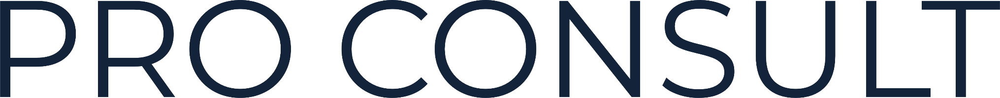
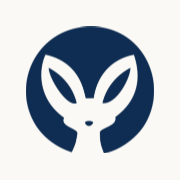

UI v2 · бренд
Фенек, який уважно слухає
Фенек чує найтихіші звуки. Для платформи, де найважливіше — вислухати, це і є образ. Тому лого працює не лише як підпис: його вуха й коло стають мотивом очікування, порожніх станів і моментів «вас почули».
Усі сторінки вже з новим лого
Старі файли — public/brand/legacy/
Варіанти лого

Лише знакІконка, згорнуте меню, аватар системи. Фенек — прозорий: крізь нього видно фон.

Кольори знака
Темно-синій#0F2D52
Синій#346A9C
Білий#FFFFFF
· Вільне поле навколо = ¼ висоти знака.
· Мінімум: знак 16px (фавікон), лого зі словом — 96px завширшки.
· Слово «Pro Consult» — лише з файлу; не набирати шрифтом сайту.
· Не заливати фенека, не додавати градієнт, обводку, тінь, не повертати.
Як обіграти на сайті
Пропозиції — оберіть, що переносимо в сторінки.1aHero «Слухає»
Знак поруч із заголовком, від нього повільно розходяться кола, як звук. Головний образ бренду, без ілюстрацій. Hero стає двоколонковим (на мобільному знак над заголовком, 96px).
1b«Визирає»
Верхівка знака з вухами виростає з темного блоку, у його ж кольорі. Тихий жарт, один на сторінку: блок «Чесні умови» на головній і футер.{{ listenLoad }}Шукаємо вільні вікна…
 Запитів поки немаєПовідомимо, щойно хтось звернеться
Запитів поки немаєПовідомимо, щойно хтось звернеться
2Очікування й порожні стани
Довге очікування (> 1 с: пошук, оплата, відправка) — знак, що «дихає», з колами. Скелетони лишаються для списків. Порожні стани — знак у кольорі #E3DBCF, 56px.
{{ listenOk }}
Запит надіслано
Марія Коваль побачить його в кабінеті й відповість листом на ваш email.
3«Вас почули»
Екран після запиту клієнта і після реєстрації спеціаліста: знак з одним колом-хвилею, що розходиться один раз. Замість галочки — образ того, що повідомлення дійшло.4Кабінет
Згорнуте меню (768–1099px) — лише знак. Системні повідомлення й підтримка в чатах — білий знак на темно-синьому колі.
5Футер
Великий знак тоном-у-тон (#EFE8DD), обрізаний кутом. Видно вуха, текст не перекриває. Лише на публічних сторінках.
Марія Коваль · Pro Consult

Pro Consult6Іконки й прев’ю посилань
Фавікон і іконка на екрані телефона вже готові. Прев’ю посилання (1200×630) — темно-синій фон, біле лого, великий знак тоном-у-тон у кутку.